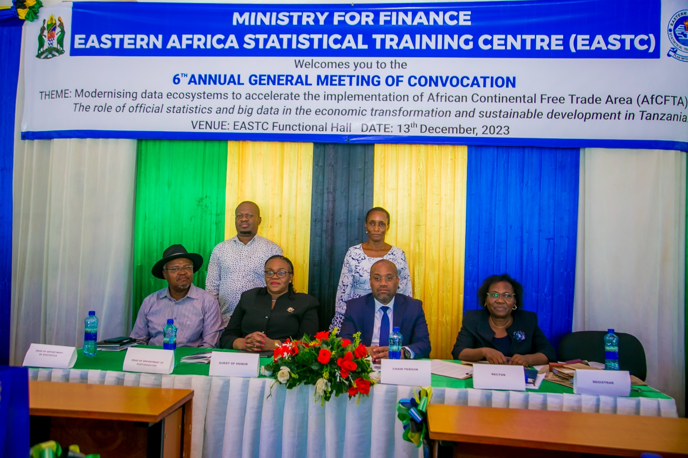

The 6th convocation of the Eastren Africa Statistical Training center of the year 2024 continues the tradition within academic institution of gathering together academicians institutions of gathering together academicians,students,alumni,benefactors,and industry proffesssionals as stakeholders of the university community.
It is the time to exchange views on on topical issues that touches teaching , research , and proffessional development.This years' convocation has selected the topic "The role of official statistics and big data in the economic transformation and sustainable development of Tanzania " . As the standing point to reflect on the theme of this year's 18 of November African Statistics day.The theme states " Mordenizing data ecosystem to accelerate the implimentation of African continental Free trade Area(AFCTA): The role of official statistics and big data in the economic transformation and sustainable development" .
1 / 15

chairperson of the annivesarry with other guests of honor
2 / 15

gifts and certificates are given to the graduants
3 / 15

gifts and certificates are given to the graduants
4 / 15

gifts and certificates are given to the graduants
5 / 15

gifts and certificates are given to the graduants
6 / 15

gifts and certificates are given to the graduants
7 /15

gifts and certificates are given to the graduants
8 / 15
gifts and certificates are given to the graduants
9 / 15

a picture of the graduants and guests of honor
10 / 15

a graduant receiving her certificate
11 / 15

The guest of honor
12 / 15

The guest of honor
13 / 15

tTHE SPEAKER
14 / 15

THE SPEAKER
15/ 15

THE CHAIRPERSON OF THE CONVOCATION
welcome to the eastern africa statistical training center in our 6th annivessary where the guest pf honor will provide some gifts to the graduants
in the annivesarry there shall be a lot of events gimh on where by the graduants will have enough time to mingle with the guest of honor , and they shall have a qiute time to take photots with him
| TIME |
OCCURING EVENT |
| 10:00 AM - 11:00 AM |
OPENING CEREMONY |
| 11:00 AM - 12:00 PM |
KEY NOTE SPEECH FROM SPEAKER 1 |
| 12:00 PM - 13:00 PM |
KEY NOTE SPEECH FROM SPEAKER 2 |
| 13:00 PM - 14:00 PM |
AWADING CERTIFICATES TO PARTICIPANTS |
| 14:00 PM - 16:00 PM |
CLOSURE OF CEREMONY |
|
|
|
|
ALL EVENTS WILL BE HELD IN FUNCTION HALL AT EASTC
ABOUT
The EASTERN AFRICA STATISTICAL TRAINING CENTER (EASTC) is an institutional that dedicats to provide a high quality education on statistical knowledge to the candidates among eastern africa community
OUR MISSION
The mission of EASTC is to enhance the capacity of statisticians,economists,researchers,and other other proffesionals in the region through specialized training programms,workshops,and seminars.
ESTABLISHMENT
EASTC was established in 1965 under the auspices of the United Nations Economic Commissions For Africa (UNECA) and the government of Tanzania . It was established to address the need for skilled statisticians and data professionals to support National development efforts in Eastern Afirca